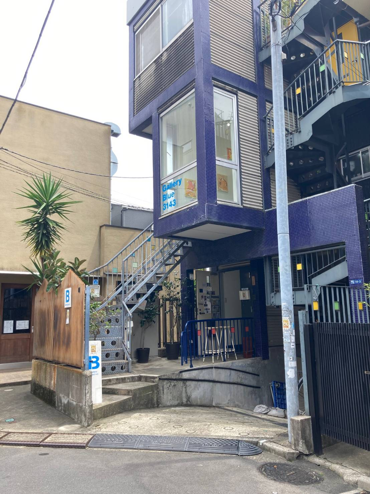
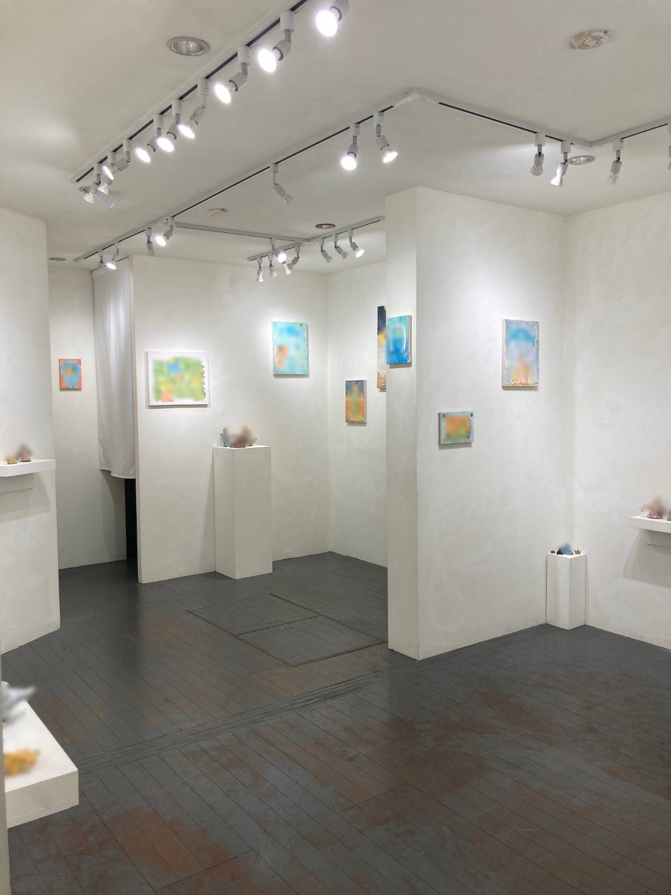
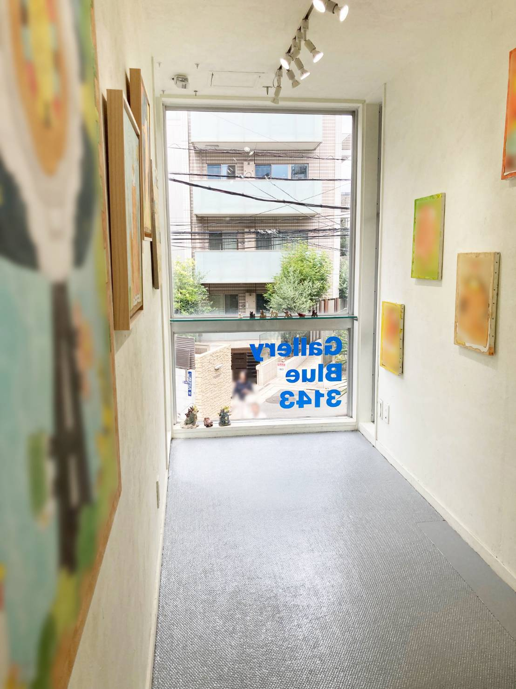

アクセス
会場までの道のりと、その先で出会える時間
表参道駅から徒歩5分。
入場無料、予約もいりません。
会場の前後に立ち寄れるカフェも、すぐそばにあります。
会場について

青いタイルが目印の、小さなギャラリー。
1階の奥と2階に展示があります。
気軽に、ふらっとお入りください。
GALLERY BLUE 3143 — 過去の展示の様子


※ 上の店内2枚は過去の展示時に撮影されたものです。
写っている作品は当展覧会のものではありません。
FROM OMOTESANDO STATION
CAFÉS
展覧会の前後に立ち寄りたいカフェ
作品を見たあとの余韻を、ゆっくり言葉にする場所。
会場から徒歩3分圏内のカフェをご案内します。
上島珈琲店 青山店
北青山3-5-14 青山鈴木硝子ビル1F
落ち着いた店内で、ネルドリップで淹れる滑らかな一杯を。朝7時半から夜9時まで開いており、観覧の前後にも立ち寄れます。
Blue Bottle Coffee 青山店
南青山3-13-14 増田ビル2F
スペシャルティコーヒーで知られる人気店。観覧後のひと息にちょうどよい、静かな2階の空間。
Cres. Coffee
南青山3-18-19 フェスタ表参道ビル本館4F
世界各地のスペシャルティ豆を、一杯ずつハンドドリップで。窓の外には表参道交差点が広がります。
allée 表参道
北青山3-5-23 1F
バスクチーズケーキとドリップコーヒー。静かな小さな店内で、ひとり時間に向く一席。
※ 各店舗の営業日・営業時間は変更となる場合があります。
お出かけ前に、リンク先の最新情報をご確認ください。